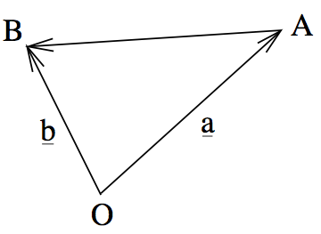
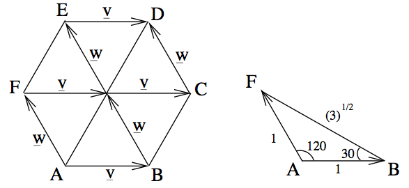

Week 2: General Vectors
General vectors
In the previous section, we worked out a set of rules that it makes sense for mathematical operations on displacements to obey. Mathematicians like to work the other way round: start from a list of rules, and see what we can deduce. This is how, for example, you might be introduced to the mathematical idea of groups.
Firstly, let’s introduce some notation to make it clear what’s a vector and what’s not. We use bold lowercase letters for vectors, like \({\mathbf{a}}, {\mathbf{b}}, {\mathbf{x}}\) etc. For scalars, we’ll use non-bold letters, and very often we’ll use Greek letters like \(\alpha, \beta, \lambda\) and \(\mu\). We write the magnitude (length) of the vector \({\mathbf{a}}\) as \(|{\mathbf{a}}|\). 1
For vectors (specifically a normed vector space, but you don’t need to know that), the rules are as follows. For any vectors \({\mathbf{a}}\), \({\mathbf{b}}\) and \({\mathbf{c}}\) and any scalars \(\lambda\) and \(\mu\),
- \({\mathbf{a}}+({\mathbf{b}}+{\mathbf{c}}) = ({\mathbf{a}}+{\mathbf{b}})+{\mathbf{c}}\): associativity of vector addition.
- \({\mathbf{a}}+{\mathbf{b}} = {\mathbf{b}} + {\mathbf{a}}\): commutativity of vector addition.
- \({\mathbf{a}}+{\mathbf{0}}={\mathbf{a}}\): adding zero does nothing.
- \({\mathbf{a}}+(-{\mathbf{a}}) = 0\): subtraction works as expected.
- \(\lambda(\mu {\mathbf{a}}) = (\lambda \mu) {\mathbf{a}}\): multiplication by scalars works as expected.
- \(\lambda({\mathbf{a}}+{\mathbf{b}}) = \lambda{\mathbf{a}}+\lambda{\mathbf{b}}\): distributivity of scalar multiplication over vector addition.
- \((\lambda+\mu){\mathbf{a}} = \lambda {\mathbf{a}} + \mu {\mathbf{a}}\): distributivity of scalar multiplication over scalar addition.
- \(|{\mathbf{a}}|\geq 0\): the magnitude can’t be negative
- \(|{\mathbf{a}}|=0\) if and only if \({\mathbf{a}}={\mathbf{0}}\): there is only one vector with magnitude 0.
- \(|\lambda{\mathbf{a}}| = |\lambda| |{\mathbf{a}}|\): multiplying by a scalar just multiplies the magnitude by that amount (removing the minus sign if necessary).
- \(|{\mathbf{a}}+{\mathbf{b}}|\leq |{\mathbf{a}}|+|{\mathbf{b}}|\): the triangle inequality.
That’s a long list! Try not to memorise these by rote, but instead learn the rules through practicing with example questions. Most of them are very intuitive. The last rule, the triangle inequality, isn’t so intuitive to me.
All too often I see people use the ‘rule’ that \(|{\mathbf{a}}+{\mathbf{b}}| = |{\mathbf{a}}| + |{\mathbf{b}}|\). This is only true if the vectors have the same direction.
Unit vectors
A unit vector is a vector with magnitude equal to 1. We sometimes use a little hat to denote unit vectors, like \(\hat{{\mathbf{a}}}\). So \(|\hat{{\mathbf{a}}}| = 1\).
Suppose you want to find a unit vector in the direction of another vector \({\mathbf{a}}\). Well \({\mathbf{b}} = \lambda {\mathbf{a}}\) is a vector in the right direction. Using the rules above, it has magnitude \(|{\mathbf{b}}|=|\lambda{\mathbf{a}}| = |\lambda| |{\mathbf{a}}|\). So if we choose \(\lambda = \frac{1}{|{\mathbf{a}}|}\), we have \(|{\mathbf{b}}| = \frac{1}{|{\mathbf{a}}|} |{\mathbf{a}}| = 1\). So \({\mathbf{b}}\) is a unit vector in the direction of \({\mathbf{a}}\).
To turn any vector into a unit vector, multiply it by one divided by the magnitude.
Position vectors
So far we’ve discussed points in space. If we choose a special point, called the origin \(O\), then we can define the position of any other point relative to this.
So given points \(A\) and \(B\), instead of just thinking about the displacement between them, if we choose an origin we can use vectos \({\mathbf{a}}\) and \({\mathbf{b}}\) to denote their positions relative to the origin.

The position vector of a point is just its displacement from the origin, \({\mathbf{a}}={\overrightarrow{OA}}\).
Think: what is the displacement vector \({\overrightarrow{AB}}\) in terms of the position vectors \({\mathbf{a}}\) and \({\mathbf{b}}\)?
We know that \({\mathbf{a}}={\overrightarrow{OA}}\) and \({\mathbf{b}} = {\overrightarrow{OB}}\). Remember from our rules for displacements that \({\overrightarrow{AB}} = {\overrightarrow{AO}}+{\overrightarrow{OB}} = -{\overrightarrow{OA}} + {\overrightarrow{OB}}\). So \({\overrightarrow{OA}} = -{\mathbf{a}} + {\mathbf{b}} = {\mathbf{b}} - {\mathbf{a}}\).
To get the displacement vector in terms of position vectors, subtract the position vector of the start from the position vector of the end.
For some reason people like to say that \({\overrightarrow{AB}}={\mathbf{a}}+{\mathbf{b}}\). This is clearly wrong. Remember that \({\overrightarrow{BA}}=-{\overrightarrow{AB}}\).
Later in the module, we’ll want to talk about a position vector for a general point in space. For historical reasons, this is usually written as \({\mathbf{r}}\). Think of \({\mathbf{r}}\) as an arrow pointing from the origin \(O\) to wherever you currently are.
Basis vectors
In two dimensions, you can write any vector as a linear combination of any two other vectors that aren’t parallel.2
That means, if we have \({\mathbf{a}}\) and \({\mathbf{b}}\) and these aren’t parallel, so there is no \(\lambda\) such that \({\mathbf{a}}=\lambda{\mathbf{b}}\), then for any vector \({\mathbf{c}}\), we can find \(\alpha\) and \(\beta\) such that \({\mathbf{c}}=\alpha{\mathbf{a}}+\beta{\mathbf{b}}\).
When doing vector problems, choose two non-parallel vectors and write all the other vectors in terms of these.
It’s extra helpful if we choose two vectors that are orthogonal (at right angles) and unit vectors. Normally we choose a vector of length 1 in the horizontal direction and call this \(\hat{{\mathbf{x}}}\) and a vector of length 1 in the vertical direction and call this \(\hat{{\mathbf{y}}}\).
Then for any vector \({\mathbf{a}}\), we can find unique scalar numbers \(a_1\) and \(a_2\) such that \({\mathbf{a}} = a_1 \hat{{\mathbf{x}}} + a_2 \hat{{\mathbf{y}}}\).
In fact, we do this so often that we introduce a new notation: \[{\mathbf{a}} = \begin{bmatrix} a_1 \\ a_2 \end{bmatrix}.\] 3
And the unit basis vectors are simply \[\hat{{\mathbf{x}}} = \begin{bmatrix} 1 \\ 0 \end{bmatrix}\] and \[\hat{{\mathbf{y}}} = \begin{bmatrix} 0 \\ 1 \end{bmatrix}.\]
In three dimensions we write \[{\mathbf{b}} = b_1 \hat{{\mathbf{x}}} + b_2 \hat{{\mathbf{y}}} + b_3 \hat{{\mathbf{z}}} = \begin{bmatrix} b_1 \\ b_2 \\ b_3\end{bmatrix}.\]
Vectors are not the same as coordinates! They are related but conceptually different. The position vector for the coordinates \((3,4,5)\) is \(\begin{bmatrix} 3 \\ 4 \\ 5\end{bmatrix}\), and we use the two different notations to distinguish them.
For the general position vector, the position in 3D space is given by the coordinates \((x,y,z)\) so \({\mathbf{r}} = \begin{bmatrix} x \\ y \\ z\end{bmatrix}\).
Column vectors
With this new notation, everything behaves exactly as you would expect:
\[\begin{bmatrix} 5 \\ 2 \end{bmatrix} + \begin{bmatrix} 1 \\ -3 \end{bmatrix} = \begin{bmatrix} 5+1 \\ 2-3 \end{bmatrix} = \begin{bmatrix} 6 \\ -1 \end{bmatrix}.\]
\[4\begin{bmatrix} 5 \\ 2 \end{bmatrix} = \begin{bmatrix} 4\times 5 \\ 4\times 2 \end{bmatrix} = \begin{bmatrix} 20 \\ 8 \end{bmatrix}.\]
If you’re unsure about any of these rules, you can rewrite \(\begin{bmatrix} 5 \\ 2 \end{bmatrix}\) as \(5\hat{{\mathbf{x}}}+2\hat{{\mathbf{y}}}\) etc. and apply the list of rules above.
Often we use the mathematical notation that \[\begin{bmatrix} -1 \\ 3 \\ -3\end{bmatrix}\in\mathbb{R}^3.\] This says that the vector lives in the set of obejcts which can be written as three real numbers. Obviously for 2D we write \(\mathbb{R}^2\) instead.
Pythagoras’s rule
We haven’t yet defined the magnitude of a general vector. What is the magnitude of \(\begin{bmatrix} 5 \\ 2 \end{bmatrix}\)?
From the rules so far, we know that \[ \left|\begin{bmatrix} 5 \\ 2 \end{bmatrix}\right| = \left|5\hat{{\mathbf{x}}}+2\hat{{\mathbf{y}}}\right| \leq |5\hat{{\mathbf{x}}}| + |2\hat{{\mathbf{y}}}| = 5|\hat{{\mathbf{x}}}| + 2|\hat{{\mathbf{y}}}| = 5\times1 + 2\times1 = 7\] but that just tells us that \(\left|\begin{bmatrix} 5 \\ 2 \end{bmatrix}\right|\leq 7\). This isn’t enough.
Actually there are lots of possible choices. In this module, we focus on normal, ‘flat’, Euclidean space: \[\left|\begin{bmatrix} 5 \\ 2 \end{bmatrix}\right| = \sqrt{5^2 + 2^2} = \sqrt{29}\] which is less than 7, as expected.
Then general rule is: \[|{\mathbf{a}}| = \sqrt{a_1^2 + a_2^2}\] and in 3D \[|{\mathbf{b}}| = \sqrt{b_1^2 + b_2^2 + b_3^2}\].
To convince yourself these are good definition, draw a diagram and use Pythagoras’s theorem.
The magnitude of a vector is the square root of the components squared and added up.
Think: what is the magnitude of the vector \(\begin{bmatrix} 2 \\ -6 \\ -3\end{bmatrix}\)?
\[\sqrt{2^2 + (-6)^2 + (-3)^2} = \sqrt{4 + 36 + 9} = \sqrt{49} = 7.\]
Don’t let the negatives confuse you!
Examples for general vectors
Example 1
Let \(ABCDEF\) be a regular hexagon with sides of length 1. Let \(\hat{{\mathbf{v}}}\) and \(\hat{{\mathbf{w}}}\) correspond to 2 adjacent sides, \({\overrightarrow{AB}} = \hat{{\mathbf{v}}}\), \({\overrightarrow{AF}} = \hat{{\mathbf{w}}}\) (where \(A\) is the bottom left point, and \(A,B,C....\) proceed anti-clockwise.)
Express all other sides and the diagonals in terms of \(\hat{{\mathbf{v}}}\) and \(\hat{{\mathbf{w}}}\). Also, find a unit vector in the direction \(\hat{{\mathbf{w}}}-\hat{{\mathbf{v}}}\).

Sides: \({\overrightarrow{AB}}={\overrightarrow{ED}}=\hat{{\mathbf{v}}}\), \(\qquad{\overrightarrow{AF}}= {\overrightarrow{CD}}=\hat{{\mathbf{w}}}\), \(\qquad{\overrightarrow{BC}}= {\overrightarrow{FE}}=\hat{{\mathbf{v}}} + \hat{{\mathbf{w}}}\).
Diagonals: \({\overrightarrow{FC}}=2\hat{{\mathbf{v}}}\), \(\qquad{\overrightarrow{BE}}=2\hat{{\mathbf{w}}}\), \(\qquad{\overrightarrow{AD}}=2(\hat{{\mathbf{v}}} + \hat{{\mathbf{w}}})\).
We have \(\hat{{\mathbf{w}}} - \hat{{\mathbf{v}}} = {\overrightarrow{BF}} = {\overrightarrow{CE}}\).
The length of \(\hat{{\mathbf{w}}} - \hat{{\mathbf{v}}}\) is \(\sqrt{3}\), which can be obtained from triangle \(AFB\). Thus a unit vector in direction of \(\hat{{\mathbf{w}}} - \hat{{\mathbf{v}}}\) is \[\frac{1}{\sqrt{3}} ( \hat{{\mathbf{w}}} - \hat{{\mathbf{v}}}).\]
Example 2
Let the points \(A\) and \(B\) have position vectors \({\mathbf{a}}\) and \({\mathbf{b}}\). Find the position vector of the midpoint of \(A\) and \(B\).
The midpoint of \(A\) and \(B\) is halfway along the line \(AB\). Call this point \(C\), and it must satisfy \({\overrightarrow{AC}}=\frac{1}{2}{\overrightarrow{AB}}\).
To get to C from the origin, we can go via \(A\). So the position vector is \[{\overrightarrow{OC}} ={\overrightarrow{OA}} + {\overrightarrow{AC}} = {\mathbf{a}} + \frac{1}{2}{\overrightarrow{AB}}.\]
Recall that \({\overrightarrow{AB}} = {\mathbf{b}}-{\mathbf{a}}\) (remember this rule!), so finally \[{\overrightarrow{OC}} = {\mathbf{a}} + \frac{1}{2}\left({\mathbf{b}}-{\mathbf{a}}\right) = \frac{1}{2}{\mathbf{a}} + \frac{1}{2}{\mathbf{b}}.\]
The position vector of the midpoint of two points is the average of the position vectors of the two points.
Footnotes
When writing vectors with pen and paper or on the board, bold is difficult, but there are various other possibilities and different people like different things. I use an underline. Whatever you choose, it’s very helpful to distinguish between vectors and scalars in your handwriting.↩︎
In three dimensions, we need to choose three vectors and so on.↩︎
Different people write these vectors vertically or horizontally, with round or square brackets. It doesn’t really matter but it’s good to be consistent.↩︎